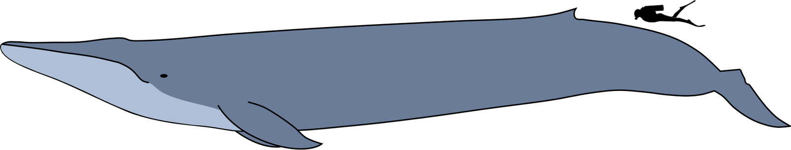
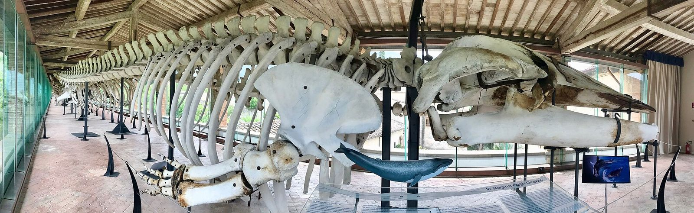
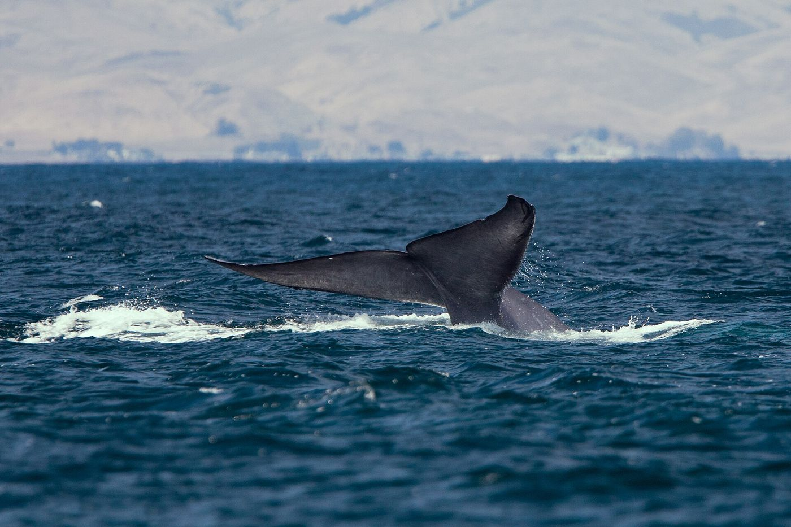
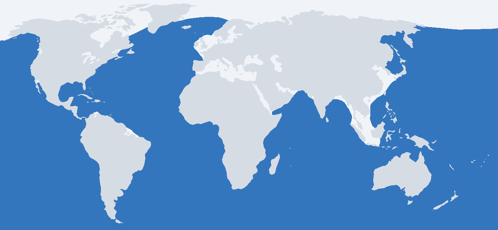
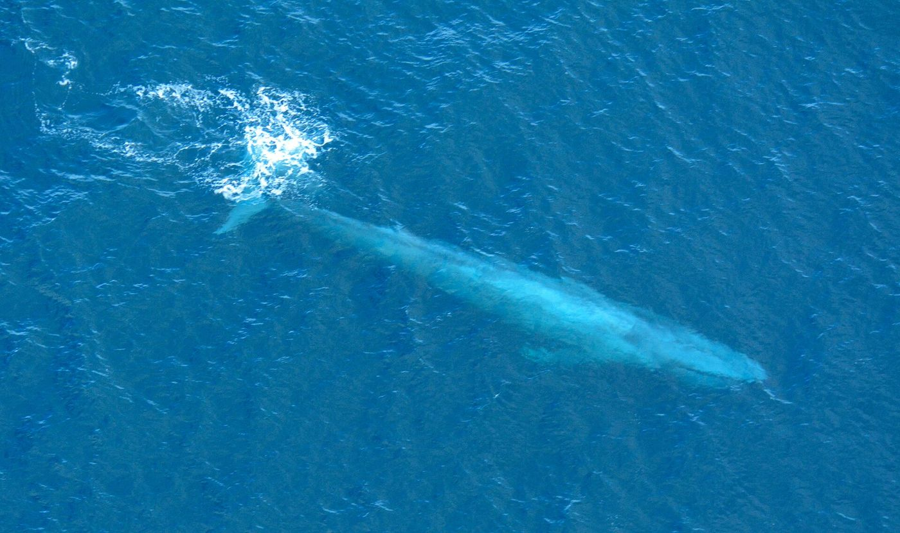

Taxonomy and naming
Carl Linnaeus described the species in 1758 in the tenth edition of Systema Naturae, originally as Balaena musculus; it is now placed in the genus Balaenoptera alongside the fin, sei, Bryde's, Omura's and minke whales, among others.3 The genus name combines the Latin balaena ("whale") with the Greek pteron ("wing" or "fin"). The species name musculus can mean either "muscle" or "little mouse" in Latin, and it is often suggested that Linnaeus intended the pun. Older English names include Sibbald's rorqual, after the 17th-century Scottish physician Robert Sibbald who described a stranded specimen, and sulphur-bottom, for the yellowish film of diatoms that can coat the animal's underside.4
Blue whales occasionally hybridize with the fin whale, another giant rorqual. Genetic work on whales sampled off Iceland found that almost all such hybrids came from a male fin whale and a female blue whale, and identified a second-generation hybrid as well.17
Subspecies
The Society for Marine Mammalogy's Committee on Taxonomy recognizes four named subspecies.3 NOAA Fisheries counts five, adding an as-yet-unnamed population in the southeastern Pacific off Chile.1 Recent genomic studies have questioned some of these boundaries, so the arrangement may change.3
| Subspecies | Common name | Main range |
|---|---|---|
| B. m. musculus (Linnaeus, 1758) | Northern blue whale | North Atlantic and North Pacific |
| B. m. intermedia Burmeister, 1871 | Antarctic blue whale | Southern Ocean, mostly south of the Antarctic Convergence in summer |
| B. m. brevicauda Ichihara, 1966 | Pygmy blue whale | Southern Indian Ocean and southwest Pacific (Australia, Madagascar, New Zealand) |
| B. m. indica Blyth, 1859 | Northern Indian Ocean blue whale | Arabian Sea, Gulf of Aden, Bay of Bengal |
| B. musculus ssp. (unnamed) | Chilean blue whale | Southeastern Pacific, migrating towards the Galápagos and the eastern tropical Pacific |
Sources: Society for Marine Mammalogy3; ranges from NOAA Fisheries.1
Description and anatomy
The blue whale has a long, streamlined body with a broad, flat, U-shaped head, a small dorsal fin set far back toward the tail, and relatively short, slender flippers.4 Its skin is a mottled blue-grey, and because the mottling pattern differs between animals, researchers use it to photo-identify individuals.1 Like other baleen whales, females are generally larger than males.1
Instead of teeth, the upper jaw carries several hundred black baleen plates made of keratin, which hang from the roof of the mouth and work like a sieve.1 Running from the chin to the navel is a series of long ventral grooves, or throat pleats, which let the mouth and throat balloon outward to take in a huge volume of water during feeding.5 The animal breathes through a pair of blowholes on top of its head, and its blow can rise as a tall, slender column above the surface.4
The body's sheer size shapes its physiology. Using an electrocardiogram tag, researchers recorded the heart of a free-swimming blue whale beating only 4–8 times per minute during foraging dives, and sometimes as slowly as 2 beats per minute, before speeding up to 25–37 beats per minute at the surface, close to the estimated maximum possible.7


Size records
Size varies by population. According to NOAA Fisheries, blue whales in the North Atlantic and North Pacific reach about 27 m (90 ft) and weigh more than 45 t (100,000 lb), while Antarctic blue whales, the largest subspecies, can reach about 33 m (110 ft) and weigh more than 150 t (330,000 lb).1
Non-lethal measurements give a sense of typical adult size today: drone photogrammetry of adult eastern North Pacific blue whales gave a median length of 22.4 m.6
Feeding
The blue whale's diet is almost entirely krill, small shrimp-like crustaceans; copepods and fish are taken only occasionally.1 In the Southern Ocean the main prey is Antarctic krill (Euphausia superba), while off California tagged whales fed mainly on the krill Thysanoessa spinifera.6 Because blue whales follow their prey, their distribution is largely driven by where krill is concentrated.1
Lunge feeding
Like other rorquals, blue whales are lunge feeders. A whale accelerates toward a dense patch of krill, opens its jaws wide and engulfs a huge mouthful of prey-laden water, which its pleated throat expands to hold. It then closes its mouth and uses its tongue to push the water out through the baleen, trapping the krill inside.15
- AccelerateThe whale speeds up toward a dense krill swarm.
- EngulfThe jaws open and the throat pleats balloon out around tonnes of water and prey.
- FilterThe mouth closes; the tongue drives water out through the baleen, leaving the krill behind.
- Swallow & repeatSeveral lunges may be made on a single dive before the whale returns to breathe.
Each lunge is energetically costly, because opening the mouth at speed creates enormous drag. Modelling based on data from digital tags suggests that blue whale foraging is nonetheless highly efficient — nearly an order of magnitude more efficient than in other marine mammals — but only when the whales target very dense krill patches.5 This dependence on dense prey may also help explain why rorqual foraging behavior changes between day and night.5
How much does the largest animal eat? NOAA has noted that the biggest individuals may eat up to about 6 t of krill a day.1 A 2021 study combining tag data, drone measurements and acoustic krill surveys estimated that an adult eastern North Pacific blue whale consumes a median of about 16 t of krill per feeding day (interquartile range 10–22 t), and that baleen whales in general eat around three times more than earlier estimates suggested.6
Vocalization
Blue whales are among the loudest animals on the planet. They produce series of pulses, groans and moans, and under the right oceanographic conditions their sounds may be heard by other whales up to about 1,600 km (1,000 miles) away. Scientists think these calls are used for communication and, perhaps, for navigation.1 Much of their sound energy is at very low frequencies, at or below the lower limit of human hearing.8
Their long, patterned songs fall into at least ten distinct types worldwide, each associated with a different population. Unlike humpback whale song, which changes substantially from year to year, each blue whale song type keeps the same units and similar phrasing for decades.8 Within a year, individuals match the pitch of their song to within about 3%.8
Remarkably, blue whale songs are getting deeper. Recordings going back to the 1960s show that the song type heard off California is now sung at a frequency about 31% lower than it was then, and all seven song types with enough data are shifting downward. The cause is still debated; one hypothesis is that as populations recover after whaling, singing males no longer need to be as loud to be heard and can trade loudness for lower pitch.8
Behavior and migration
Blue whales are usually seen alone or in pairs, although they sometimes travel in small groups. They typically swim at about 8 km/h (5 mph) while feeding and traveling, and can accelerate to more than 32 km/h (20 mph) in short bursts.1 Tagged whales off California made foraging dives as deep as 184 m lasting up to 16.5 minutes.7

Most populations make long seasonal migrations: they generally spend summer feeding in high-latitude, krill-rich waters and move toward warmer, lower-latitude waters in winter, where most mating and calving takes place.1 Migration routes are not well known, however, and the pattern is not universal. Some individuals in certain areas may not migrate at all, and not every Antarctic blue whale migrates every year.1 A population in the northern Indian Ocean is considered resident; its movements may follow monsoon-driven changes in the ocean.1
Eastern North Pacific blue whales are a well-studied example: they are thought to feed in summer off the U.S. West Coast and, to a lesser extent, in the Gulf of Alaska and the central North Pacific, and to spend the winter off Mexico and Central America.1
Reproduction and life cycle
Comparatively little is known about blue whale life history. Most reproductive activity, including mating and births, takes place in winter. The best available evidence suggests a gestation of about 10–12 months, and calves are weaned at around 6–7 months of age, on or on the way to the summer feeding grounds. Females give birth on average every 2–3 years, and the age of sexual maturity is thought to be 5–15 years.1 A newborn calf is already one of the largest animals on Earth, roughly 7 m (23 ft) long.4
- Gestation
- ~10–12 months
- Weaning
- ~6–7 months
- Calving interval
- 2–3 years
- Sexual maturity
- 5–15 years
- Lifespan
- ~80–90 years
Blue whales with young calves are regularly seen in the Gulf of California (Sea of Cortez) from December through March, and the area is believed to be an important calving and nursing ground.1 Age can be estimated after death by counting the growth layers in the whale's waxy earplug, much like tree rings; these suggest an average lifespan of around 80–90 years.1
Distribution and habitat

Blue whales are found in all oceans except the Arctic, in both open ocean and coastal shelf waters, wherever krill is concentrated.1
- North Atlantic. From the subtropics to the Greenland Sea, including waters off eastern Canada and the shelf waters of the eastern United States.1
- North Pacific. Eastern North Pacific whales feed off the U.S. West Coast and winter off Mexico and Central America; the Gulf of California is an important nursery.1
- Northern Indian Ocean. A resident population recorded from the Gulf of Aden, the Arabian Sea and across the Bay of Bengal.1
- Southern Hemisphere. Antarctic blue whales feed mainly south of the Antarctic Convergence near the ice edge in summer; pygmy blue whales live farther north, especially off Australia, Madagascar and New Zealand; Chilean blue whales range from southern Chile to the Galápagos and the eastern tropical Pacific.19

A 2007 review of Southern Hemisphere records, drawing on catch data, sightings, strandings and acoustic detections, mapped how blue whales use these waters and how their distribution has changed since whaling.9 Off the U.S. West Coast, NOAA scientists combine satellite tracking with ocean data to predict where blue whales are likely to be in near real time, helping ships avoid them.1
Population and conservation
Whaling
Late 19th-century advances in whale-catching technology, combined with the expansion of processing capacity in the early 20th century, created an industry that could catch and process almost any whale in any ocean.11 Whaling across the 20th century killed nearly 2.9 million large whales of all species, with the heaviest catches in the Southern Hemisphere in 1925–39 and in both hemispheres in 1946–75.11
More than 380,000 blue whales were taken between 1868 and 1978, mostly in Antarctic waters.12 The Antarctic subspecies suffered most: modelling suggests it fell from about 239,000 animals before exploitation to a low of perhaps 360 in 1973, after illegal Soviet whaling ended.10
- Late 1800s
New whale-catching technology opens the way to industrial whaling of the great whales.11
- 1925–39
Peak era of industrial whaling in the Southern Hemisphere.11
- 1966
Blue whales receive complete protection from commercial whaling under the International Convention for the Regulation of Whaling.1
- 1970
Listed as endangered in the United States, later carried over to the Endangered Species Act.1
- 1973
Antarctic blue whales reach an estimated low of about 360 animals.10
- 1986
An international moratorium on all commercial whaling takes effect.1
- 2018
IUCN assesses the species as Endangered, with an increasing population trend.2
- 2020
NOAA Fisheries adopts a revised Blue Whale Recovery Plan.1
Recovery
The global population of mature blue whales was around 140,000 in 1926. The current figure is uncertain but is estimated at 5,000–15,000 mature individuals, only 3–11% of the 1926 level.122 Recovery differs between regions. Antarctic blue whales were estimated to be increasing at about 7.3% a year, but their 1996 population of roughly 1,700 was still only about 0.7% of the pre-whaling level.10 In contrast, a population model for eastern North Pacific blue whales suggested they never fell below about 460 animals and may now be close to the carrying capacity of their environment, a sign that whale populations can rebuild under careful management.13
Blue whales are listed as Endangered by the IUCN and under the U.S. Endangered Species Act, are protected under the Marine Mammal Protection Act, and are listed on Appendix I of CITES.12 The main aim of NOAA's recovery plan is to maintain the international ban on commercial whaling while learning more about population structure and current threats.1
Threats today
With commercial whaling halted, NOAA identifies vessel strikes and entanglement in fishing gear as the primary threats to blue whales, with ocean noise, habitat degradation, pollution, vessel disturbance and climate change as additional, less well understood risks.1
Ship strikes
Collisions often go unnoticed and unreported. A model of vessel encounters off the U.S. West Coast estimated blue whale deaths at 7.8 times the U.S. recommended limit, with most risk concentrated in a small area off California, including the shipping lanes off San Francisco and Long Beach.14 Slowing ships to 10 knots or less and moving shipping lanes reduce the risk.114
Entanglement
Blue whales can become caught in traps, pots and nets, and may drag the gear for long distances. This can cause exhaustion, reduce their ability to feed, and lead to severe injury, lower breeding success or death.1
Ocean noise
Noise from ships, sonar and industry can disrupt whales' normal behavior and drive them from important areas.1 Off Southern California, blue whales were less likely to call when mid-frequency military sonar was present, even though the sonar is well above the frequencies they use themselves.15
Climate change
Blue whales depend on dense krill swarms. In the southwest Atlantic sector of the Southern Ocean, krill stocks declined over recent decades in step with shrinking winter sea ice, a trend that could reduce food available to Antarctic blue whales.161
Interesting facts
- 2 bpm
Lowest heart rate recorded in a diving blue whale.7
- ~16 t
Median krill eaten per feeding day by an eastern North Pacific blue whale.6
- 31%
Drop in pitch of the California blue whale song since the 1960s.8
- ~1,600 km
Distance over which blue whale calls may be heard in the right conditions.1
- 0.7%
Antarctic blue whales in 1996, as a share of their pre-whaling numbers.10
- Unique
Each whale's skin mottling is distinctive enough to identify it in photographs.1
References
- NOAA Fisheries. “Blue Whale (Balaenoptera musculus).” National Oceanic and Atmospheric Administration. fisheries.noaa.gov/species/blue-whale
- Cooke, J.G. (2018). “Balaenoptera musculus (errata version published in 2019).” The IUCN Red List of Threatened Species 2018: e.T2477A156923585. iucnredlist.org/species/2477/156923585 · doi:10.2305/IUCN.UK.2018-2.RLTS.T2477A156923585.en
- Committee on Taxonomy. “List of marine mammal species and subspecies.” Society for Marine Mammalogy. marinemammalscience.org
- Sears, R. & Perrin, W.F. (2009). “Blue whale: Balaenoptera musculus.” In Encyclopedia of Marine Mammals (2nd ed.), pp. 120–124. Academic Press. doi:10.1016/B978-0-12-373553-9.00033-X
- Goldbogen, J.A., Calambokidis, J., Oleson, E., Potvin, J., Pyenson, N.D., Schorr, G. & Shadwick, R.E. (2011). “Mechanics, hydrodynamics and energetics of blue whale lunge feeding: efficiency dependence on krill density.” Journal of Experimental Biology 214: 131–146. doi:10.1242/jeb.048157
- Savoca, M.S., Czapanskiy, M.F., Kahane-Rapport, S.R., et al. (2021). “Baleen whale prey consumption based on high-resolution foraging measurements.” Nature 599: 85–90. doi:10.1038/s41586-021-03991-5
- Goldbogen, J.A., Cade, D.E., Calambokidis, J., et al. (2019). “Extreme bradycardia and tachycardia in the world's largest animal.” Proceedings of the National Academy of Sciences 116(50): 25329–25332. doi:10.1073/pnas.1914273116
- McDonald, M.A., Hildebrand, J.A. & Mesnick, S. (2009). “Worldwide decline in tonal frequencies of blue whale songs.” Endangered Species Research 9: 13–21. doi:10.3354/esr00217
- Branch, T.A., Stafford, K.M., Palacios, D.M., et al. (2007). “Past and present distribution, densities and movements of blue whales Balaenoptera musculus in the Southern Hemisphere and northern Indian Ocean.” Mammal Review 37(2): 116–175. doi:10.1111/j.1365-2907.2007.00106.x
- Branch, T.A., Matsuoka, K. & Miyashita, T. (2004). “Evidence for increases in Antarctic blue whales based on Bayesian modelling.” Marine Mammal Science 20(4): 726–754. doi:10.1111/j.1748-7692.2004.tb01190.x
- Rocha, R.C. Jr., Clapham, P.J. & Ivashchenko, Y.V. (2014). “Emptying the oceans: a summary of industrial whaling catches in the 20th century.” Marine Fisheries Review 76(4): 37–48. doi:10.7755/MFR.76.4.3
- National Marine Fisheries Service (2020). Blue Whale (Balaenoptera musculus) 5-Year Review: Summary and Evaluation. NOAA Fisheries Office of Protected Resources. repository.library.noaa.gov/view/noaa/27400
- Monnahan, C.C., Branch, T.A. & Punt, A.E. (2015). “Do ship strikes threaten the recovery of endangered eastern North Pacific blue whales?” Marine Mammal Science 31(1): 279–297. doi:10.1111/mms.12157
- Rockwood, R.C., Calambokidis, J. & Jahncke, J. (2017). “High mortality of blue, humpback and fin whales from modeling of vessel collisions on the U.S. West Coast suggests population impacts and insufficient protection.” PLOS ONE 12(8): e0183052. doi:10.1371/journal.pone.0183052
- Melcón, M.L., Cummins, A.J., Kerosky, S.M., et al. (2012). “Blue whales respond to anthropogenic noise.” PLOS ONE 7(2): e32681. doi:10.1371/journal.pone.0032681
- Atkinson, A., Siegel, V., Pakhomov, E. & Rothery, P. (2004). “Long-term decline in krill stock and increase in salps within the Southern Ocean.” Nature 432: 100–103. doi:10.1038/nature02996
- Pampoulie, C., Gíslason, D., Ólafsdóttir, G., et al. (2021). “Evidence of unidirectional hybridization and second-generation adult hybrid between the two largest animals on Earth, the fin and blue whales.” Evolutionary Applications 14(2): 314–321. doi:10.1111/eva.13091
- Motani, R. & Pyenson, N.D. (2024). “Downsizing a heavyweight: factors and methods that revise weight estimates of the giant fossil whale Perucetus colossus.” PeerJ 12: e16978. doi:10.7717/peerj.16978
Image credits
All images were downloaded from Wikimedia Commons and are served locally from this site. Images by U.S. federal employees (NOAA) are in the public domain; others are used under the Creative Commons licenses shown.
- Hero: aerial view of a blue whale — NOAA Photo Library (anim1754). Public domain. Source
- Infobox: adult blue whale, eastern Pacific — NMFS Northeast Fisheries Science Center (NOAA). Public domain. Source
- Size comparison — Kurzon. CC BY-SA 3.0. Rendered from SVG to PNG. Source
- Skeleton, University of Pisa — Federigo Federighi. CC BY-SA 4.0. Source
- Tail fluke, Morro Bay — Mike Baird. CC BY 2.0. Source
- Range map — Pcb21 (after Vardion). CC BY-SA 3.0 (relicensed from GFDL); colors adjusted for this site, and the adjusted version is shared under the same license. Source
- Aerial, Southern California — Don Ramey Logan. CC BY-SA 3.0. Source